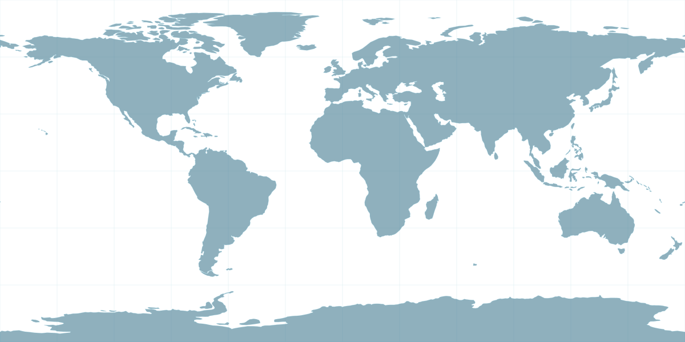
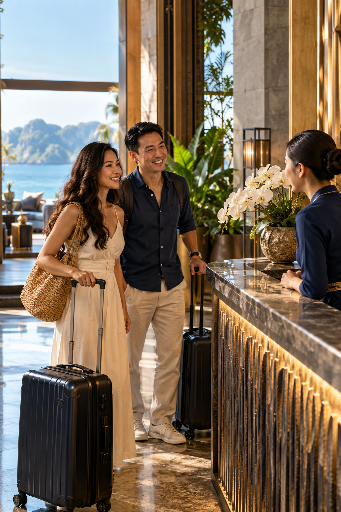
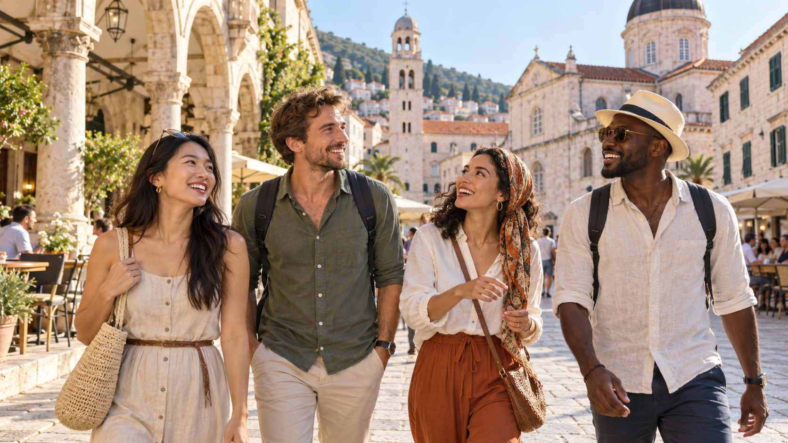
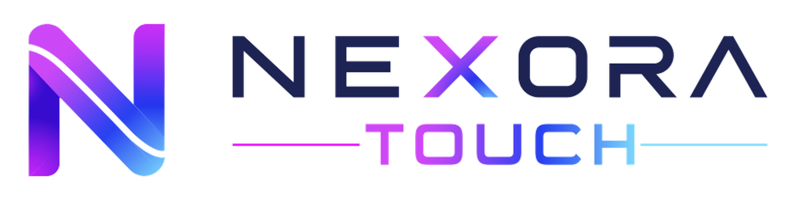
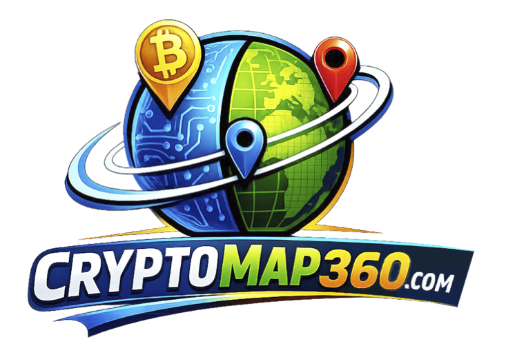

打开地图。选择一个地方。
选择地图上的一个点或下面的目的地即可查看其全屏照片。这些是旅行创意，而不是目前正在销售的旅游。

找到你想要探索的旅程。
按地点和体验浏览六种旅程概念。分享您的兴趣；路线、服务、出发日期和价格需要在预订前单独确认。
激发你灵感的地方
在地图上发现更多场景。照片仅说明目的地，并不描述具体的旅游行程。
开始计划你的下一次旅程。
选择一个项目并告诉我们您喜欢的时间和团体人数。这是规划查询，而不是预订或付款。

看到移动中的旅程。
来自 VMMTRAVEL、VLINKPAY 和 VMMCASHBACK 的视频，包括 VLINKGROUP 旅程、迪拜活动及 VMMTRAVEL 完整版影片。旧视频中关于免费旅行和返现的介绍仅供回顾，并非当前优惠的确认。新行程与优惠将另行公布。 此外还收录由 MOONGLEMALL 发布的 VLINKGROUP 五周年纪念及团队活动影片。

与VMMTRAVEL一起探索世界
一趟。有很多故事要讲。
我们记得的时刻往往是我们分享的时刻：发现一条街道、停下来休息、一起欢笑。选择一个场景来跟随故事。
让一条街道带路。
新的一天从一条陌生的街道开始，周围是鲜花、小咖啡馆和无人计划的对话。朋友们放慢脚步，让这个地方显露出来。
对新地方保持开放态度。01 / 06每天晚上都会回去的地方。
经过一天的穿越，大家到达酒店，放下行李，喘口气。适当的停顿为明天的故事提供了开始的空间。
休息属于旅途。02 / 06 场景说明 · 03/06
场景说明 · 03/06给风景说话的空间。
湖边，大家暂时放下手机，欣赏湖水和远山。有时候，旅途不需要额外的停留，只需要有时间在一起。
给予美丽的地方全部的关注。03 / 06 场景说明 · 04/06
场景说明 · 04/06随风而至，另一番风景。
从甲板上，朋友们指出一座岛屿、一座山脊、海上的一道光。一起看到相同的景色有助于他们留下深刻的印象。
分享新视角。04 / 06 场景说明 · 05/06
场景说明 · 05/06围坐在桌子旁结束一天。
随着光线变暗，朋友们聚集在一起吃晚饭。他们交换最喜欢的时刻，嘲笑一个小事故，并想知道明天会走向何方。这顿饭成为记忆的一部分。
当我们分享时，快乐就会增长。05 / 06保持在一起的时刻。
在河边，一位朋友举起电话，每个人都靠在画面上。一张照片无法记录整个旅程，但可以带回一起在一起的感觉。
把共同的记忆带回家。06 / 06目的地照片标注在页面上。海滩漫步者、酒店环境等旅行场景均由AI生成插画；它们不代表当前出售的旅游团或合作伙伴。
探索每一次旅程的新方式。
古老的街道、开阔的风景、共享的晚餐和大海：每个场景都暗示着另一种享受旅行的方式。这些是说明性图片，并非有记录的 VMMTRAVEL 团体或出售的旅游团。

从旅行理念到更清晰的旅程。清晰旅行。
描绘适合的旅程的三个步骤：选择目的地、了解选项并为共同体验腾出空间。路线、价格和服务将在每个项目公布时确认。
- 01
寻找灵感
考虑一下您想去哪里、要带谁以及您想要什么样的感觉。
- 02
查看选项
了解沿途的配速、停靠点、休息地点和经历。
- 03
一起出发
在路上留出更多空间用于发现、休息和联系。
旅程结束后我们留下的是什么。
VMMTRAVEL 将旅行想象为不仅仅是到达目的地：从新的角度看问题，为彼此腾出时间，并带着值得分享的故事回家。
- 01探索
发现风景、文化和新视角。
- 02连接
为家人、朋友和旅伴腾出时间。
- 03带回家
传承灵感、记忆和故事。

商务平台
加密货币服务探索